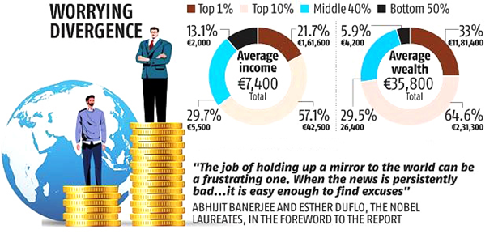

Multilaterals
World Inequality Report 2022: Key Takeaways for India
The report
-
The World Inequality Report 2022 was released by the World Inequality Lab, which aims to promote research on global inequality dynamics.
-
It is authored by Lucas Chancel and coordinated by renowned economists Thomas Piketty, Emmanuel Saez and Gabriel Zucman and produced insight on global inequalities.
-
This report presents the most up-to-date synthesis of international research efforts to track global inequalities.

India Specific Findings
-
Distribution of Wealth
-
India stands out as a poor and very unequal country.
-
The top 1% of the population hold more than one-fifth of the total national income in 2021 and the bottom half just 13%.
-
The economic reforms and liberalization adopted by India have mostly benefited the top 1%.
-
Average Household Wealth
-
It stands at Rs. 983,010. It has been observed that the deregulation and liberalization policies implemented since the mid-1980s have led to “one of the most extreme increases in income and wealth inequality observed in the world”.
-
Gender Inequalities
The female labour income share is equal to 18% which is significantly lower than the average in Asia [21%, excluding China] and this value is one of the lowest in the world.
-
The report finds out that India is among the most unequal countries in the world.
-
It highlights that the top 10% and top 1% in India hold 57% and 22% of the total national income respectively while the bottom 50% share has gone down to 13%.
-
According to the report, the average national income of the Indian adult population is Rs 2,04,200. Here, the bottom 50% of earns Rs 53,610 while the top 10% earns Rs 11,66,520, over 20 times more.
-
The report also says that over the past three years, the quality of inequality data released by the government has seriously deteriorated which has made it particularly difficult to assess recent inequality changes.
-
The share of public wealth across countries has been on a decline for decades now. Public wealth typically include public buildings housing administrations, schools, universities, hospitals and other public services.
-
The report says that emerging economies like India and China experienced faster increases in private wealth than wealthy countries after they transitioned away from regulated economies. In India, particularly, private wealth went up from 290% in 1980 to 560% in 2020.
-
The report shows that the income inequality in India under the British colonial rule (1858-1947) was very high, with a top 10% income share around 50%. After independence, due to socialist-inspired five-year plans, this share was reduced to 35-40%. But the liberalisation and deregulation policies have led to one of the most extreme increases in income and wealth inequality in the world with the top 1% has largely benefited from these economic reforms, the growth among low and middle-income groups has been relatively slow and poverty persists.
-
On wealth inequality, it says that the average household wealth in India is around Rs 9,83,010. The bottom 50% of the population owns with an average wealth of Rs 66,280 or 6% of the total household wealth. The middle class owns average wealth of Rs 7,23,930 or 29.5% of the total. The top 10% owns 65% of the total wealth, averaging Rs 63,54,070 and the top 1% owns 33%, averaging Rs 3,24,49,360.
-
Gender inequality in India is also considerably on the higher end of the spectrum. The share of female labour income share in India is equal to 18% which is significantly lower than the average in Asia (21%, excluding China) & is among the lowest in the world. Although, the number is slightly higher than the average share in Middle East (15%). However, a significant increase has been observed since 1990, but it has been insufficient to lift women’s labour income share to the regional average.
Findings for the World:
-
Countries across the world have become richer over the past 40 years, but their governments have become significantly poorer. The report shows that the share of wealth held by public actors is close to zero or negative in rich countries, meaning that the totality of wealth is in private hands.
-
The currently low wealth of governments has important implications for state capacities to tackle inequality in the future, as well as the key challenges of the 21st century such as climate change.
-
Following the outbreak of Covid-19 pandemic, governments borrowed the equivalent of 10-20% of GDP, essentially from the private sector. The relatively lower wealth status of the governments can have an impact in curbing inequality in the future.
-
The Covid-19 pandemic and the economic crisis that followed hit all world regions, but it hit them with varying intensity.
-
Europe, Latin America, and South and Southeast Asia recorded the largest drops in national income in 2020 (between -6% and -7.6%) while East Asia (where the pandemic began) succeeded in stabilizing its 2020 income at the level of 2019.
-
The poorest half of the global population “barely owns any wealth” possessing just 2% of the total, whereas the richest 10% of the global population own 76% of all wealth.
-
The Middle East and North Africa (MENA) are the most unequal regions in the world, whereas Europe has the lowest inequality levels.
-
Women’s share of total incomes from work (labour income) was about 30% in 1990 and is less than 35% now.
-
Inequalities within countries are now greater than those observed between countries.
-
At the same time, the gap between the average incomes of the top 10% and the bottom 50% of individuals within countries has almost doubled.
Suggestions
-
The report suggested levying a modest progressive wealth tax on multimillionaires.
-
Given the large volume of wealth concentration, modest progressive taxes can generate significant revenues for governments.